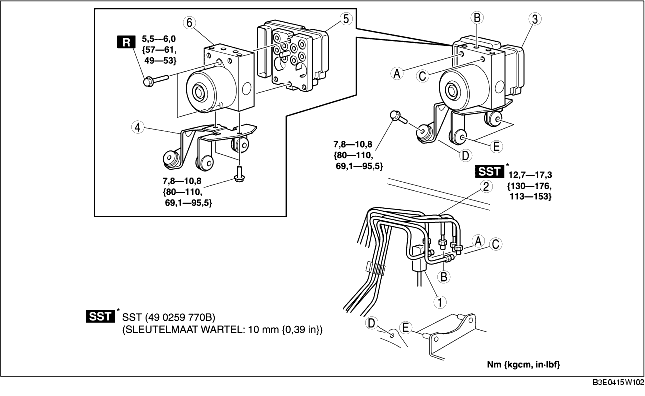

VERWIJDEREN/PLAATSEN DSC-MODULE
B3E041543750W01
-
Opmerking
-
• De dynamische stabiliteitsregeling zal in dat geval na het vervangen van de DSC-module wellicht niet juist werken. Voer na het plaatsen altijd de initialisatieprocedures uit voor de multisensor en de remvloeistofdruksensor.
-
• Gebruik altijd de adapter die wordt meegeleverd met een nieuwe DSC-module bij het losnemen van het hydraulische gedeelte of het elektronische gedeelte van de DSC-module. Als u dat niet doet, kan de pomp losraken van het hydraulische gedeelte van de DSC-module en beschadigd worden. Neem daarom het hydraulische gedeelte en het elektronische gedeelte niet uit elkaar, tenzij ze vervangen moeten worden. Als ze vervangen moeten worden door nieuwe, moeten altijd de instructies worden opgevolgd die worden meegeleverd met de nieuwe onderdelen.
-
• De inwendige onderdelen van de DSC-module kunnen beschadigd raken als de DSC-module valt. Laat de DSC-module niet vallen. Vervang de DSC-module als deze aan een overmatige schok is blootgesteld.
1. Verwijder de accu en de accuhouder. (Zie VERWIJDEREN/PLAATSEN ACCU [ZJ, Z6].) (Zie VERWIJDEREN/PLAATSEN ACCU [LF].)
2. LHD: Verwijder de slang van het reservoir (MT). (Zie Aanwijzing voor verwijderen - slang reservoir.) (Zie Aanwijzing voor verwijderen - koppelingsleiding en reservoirslang.) (Zie Aanwijzing voor plaatsen - slang reservoir.) (Zie Aanwijzing voor plaatsen - koppelingsleiding en reservoirslang.)
3. Verwijder de onderdelen in de aangegeven volgorde, zie de tabel.
4. Plaats de onderdelen in omgekeerde volgorde.
5. Voer de initialisatieprocedures voor de multisensor en de remvloeistofdruksensor uit. (Zie INITIALISATIEPROCEDURE MULTISENSOR.) (Zie INITIALISATIEPROCEDURE REMVLOEISTOFDRUKSENSOR.)
6. Wis de storingscodes uit het geheugen. (Zie Storingscodes wissen.)
-
Aanwijzing
-
• Zelfs als de initialisatieprocedure is uitgevoerd na het vervangen van de DSC-module, zullen storingscode B2141 en C2785 zijn opgeslagen als eerder opgetreden storing.

.
|
1
|
Stekker
|
|
2
|
Remleiding
|
|
3
|
DSC-module, steun
|
|
4
|
Steun
|
|
5
|
DSC-module
|
|
6
|
Hydraulische module
|
Aanwijzing voor verwijderen - remleiding
1. Breng een merkteken aan op de remleiding en de DSC-module.
2. Breng tape aan op de stekker om binnendringen van remvloeistof te voorkomen.
3. Verwijder de remleiding.
Aanwijzing voor verwijderen - DSC-module, steun
1. Verplaats op de aangegeven manier de steun in de richting van de pijl en verwijder de DSC-module met de steun van de auto.
Aanwijzing voor plaatsen - remleiding
1. Breng de merktekens die werden aangebracht voor het verwijderen met elkaar in lijn en plaats de remleiding op de aangegeven manier op de DSC-module.